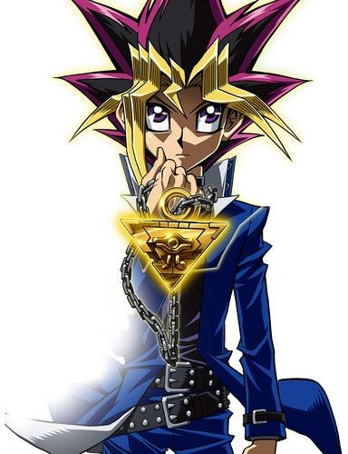
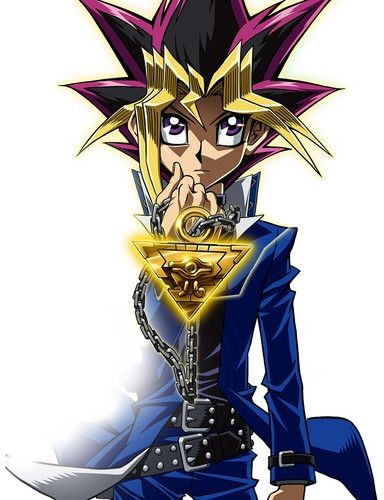
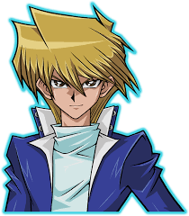
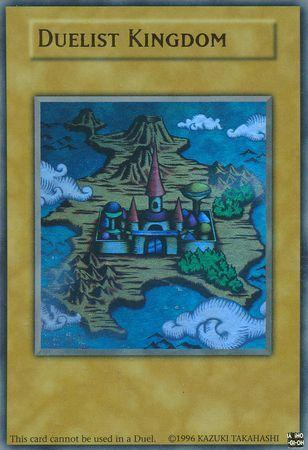

Yugi Muto
Descrição: O protagonista da série, conhecido por sua habilidade única de conectar-se com o Espírito do Faraó e seu deck equilibrado e versátil.
Habilidades
Uso do Espírito do Faraó, estratégia, coragem, resolução de enigmas.
Em um mundo onde duelos definem o destino, Yugi e seus amigos enfrentam desafios cada vez maiores para proteger o Mundo dos Duelos das forças do mal.
Esta campanha leva os jogadores a cruzar cidades, arenas e mistérios antigos, utilizando cartas e estratégias para superar seus adversários.
"O coração das cartas guiará seu caminho." — Yugi Muto
Você está pronto para desafiar os maiores duelistas e provar seu valor?
Descrição: O protagonista da série, conhecido por sua habilidade única de conectar-se com o Espírito do Faraó e seu deck equilibrado e versátil.
Uso do Espírito do Faraó, estratégia, coragem, resolução de enigmas.
Descrição: Rival de Yugi, um duelista arrogante e brilhante, famoso por seu dragão branco de olhos azuis e sua determinação.
Alta inteligência, estratégia agressiva, domínio de monstros dragões.

Descrição: Melhor amigo de Yugi, um duelista leal e corajoso que evolui ao longo da série, conhecido por seu deck de guerreiros.
Determinação, improvisação, espírito de luta, combate corpo a corpo.
O mundo dos duelistas é vasto, com arenas, cidades e locais misteriosos onde os duelos definem o futuro.
